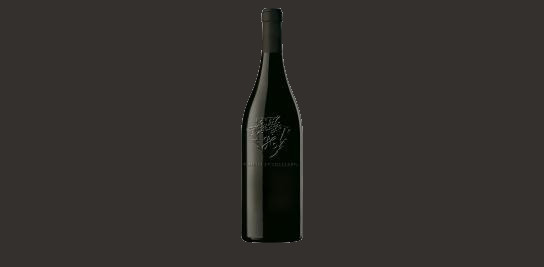
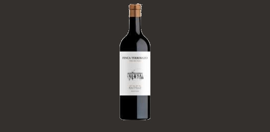
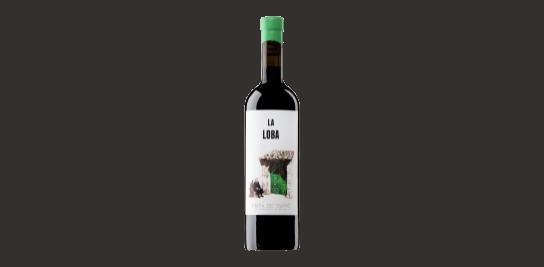

Vinos Españoles
En esta página se hablarán sobre los distintos vinos tintos que rondan España, el objetivo de esto será llegar al santo grial de los vinos, aquel que cuando toca tus
papilas gustativas las deshace y todo lo que puedes sentir es un sabor perfecto inundándote placer
_____VINO DE LA TIERRA DE MALLORCA.

El vino nace de unas viñas ecológicas de alrededor de 50 años de edad media, plantadas a unos 100 metros por encima del nivel del mar sobre suelos profundos. El vino fermenta en barricas abiertas de 225 litros y pasa una crianza de 14 meses en barricas nuevas de 600 litros de roble francés Allier. La variedad callet despliega aromas a violetas, el carácter mineral del vino y destacaría el aroma a fósforo, mientras que la pequeña proporción de la autóctona fogoneu le da cuerpo, una parte de grasa en boca y también sensación de frescura. La producción es de tan solo 1.000 botellas, y eso lo hace un vino muy especial y muy cotizado. Es un vino para todo el que busca poder disfrutar del Mediterráneo encada sorbo.
_____DOP PAGO EL TERRERAZO.

La bobal es una variedad mediterránea poco conocida aún. Aunque se produce en cantidad, siempre ha sido una casta humilde, dedicada a graneles y rosados hasta que un viticultor visionario, Toni Sarrión, se empeñó a mediados de los noventa en encerrar sus sueños en una botella de un gran vino elaborado con bobal. Y lo consiguió. La historia del cambio comenzó donde nacen siempre los grandes vinos, en la viña, aplicando en su finca familiar una viticultura de precisión, ecológica, de estricto secano y baja producción, en busca de la mayor calidad.
_____DO RIBERA DEL DUERO.

El vino transmite toda la vitalidad, dinamismo y visión artesana de Ana Carazo. Fruta jugosa, tanino firme pero integrado, potencia domada y muchísimo sabor. Ana es indómita, inquieta, curiosa, decidida y sin miedos, así al menos la recuerda su abuela materna, la señora Anastasia, a quien podemos ver en la etiqueta de este vino reposando al lado de la bodega.
_____DO JUMILLA.

Sincera expresión de la dureza del paisaje murciano. Las Gravas es fruto de cepas de monastrell de 30 años plantadas en vaso y cultivadas en secano riguroso. El nombre del vino habla ya de una tierra pobre y pedregosa, solo refrescada por la orientación de la viña que mira al norte y por la altura de la finca, que propicia un halo de frescor nocturno al tórrido verano murciano. El vino resulta así paisaje embotellado. Vendrá luego la sensibilidad de quien hace el vino.